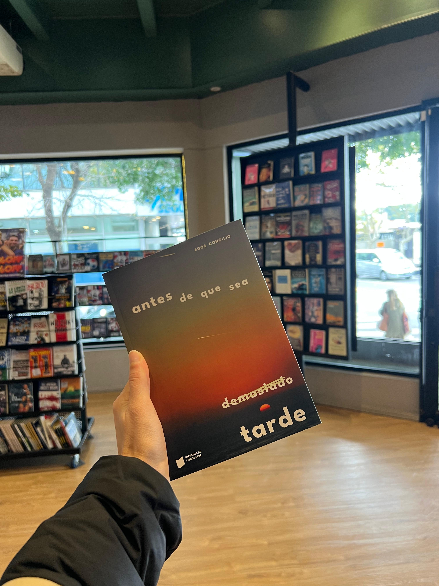
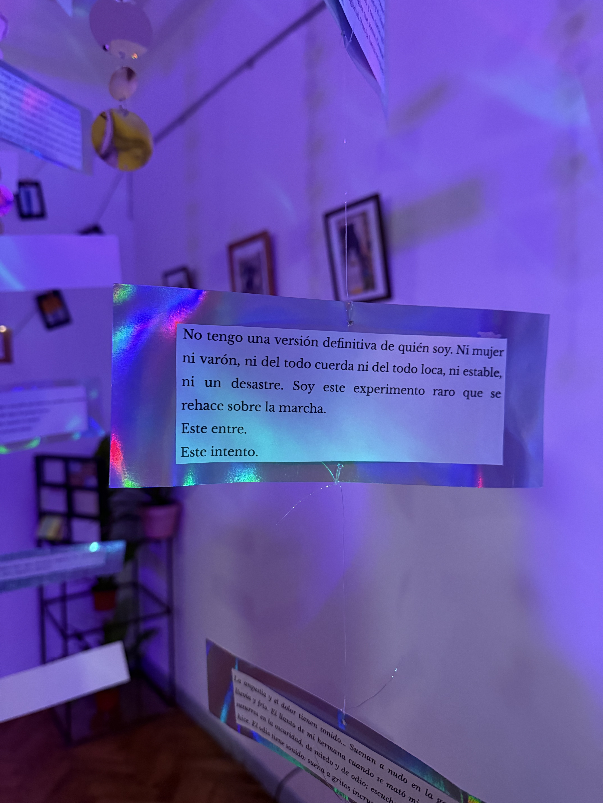
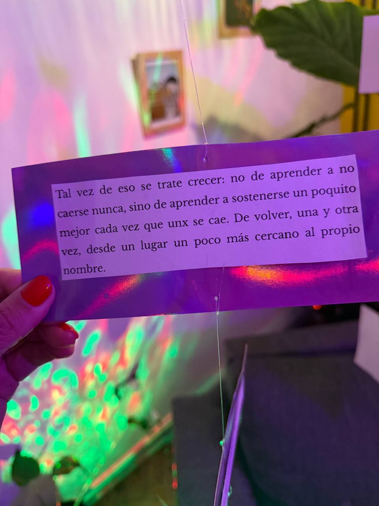

Novela · Autoficción · Performance · 2026
Una historia sobre lo que pasa cuando una forma de amar, de pensar y de habitar el cuerpo deja de funcionar.

"Hay historias que no terminan cuando terminan. Siguen viviendo en el cuerpo."
Sobre la novela
Vivimos en una época que aprendió a hablar de libertad antes que de sostén. Que romantizó el desapego. Que medicalizó el exceso de sensibilidad y convirtió el autoconocimiento en mandato. Tenemos palabras para nombrarlo todo. Y sin embargo, cada vez más personas viven con la sensación de llegar tarde a sí mismas.
Antes de que sea demasiado tarde nace en ese desfase. No es una historia de superación. Es una historia de tránsito. De lo que pasa en el medio, cuando lo que eras ya no te sostiene y lo que serás todavía no tiene nombre.
Escrito desde la trinchera de una vivencia no binaria y millennial, el libro recorre los actos de una vida que se rompe y se rearma entre sesiones de terapia, listas de reproducción de Spotify, medicación y diagnósticos, y el aroma a limón de los recuerdos que se niegan a morir.
"¿Qué parte de lo que sentimos es propia y qué parte es efecto de la época en la que vivimos?"
La estructura es fragmentaria porque la experiencia también lo es. No es experimentación formal: es traducción narrativa de una subjetividad en crisis. Fue pensado como una película que se puede leer: cada capítulo tiene una curaduría musical propia, desde Javiera Mena y Marilina Bertoldi hasta Radiohead, Thom Yorke y boleros de Trío Los Panchos. En el interior, un código QR da acceso a la playlist oficial.
Esta obra fue escrita íntegramente en lenguaje sin marcas de género. No es una consigna, sino una voz que nombra el mundo por fuera del binarismo.
Ficha técnica
Primera edición disponible.
Enviamos a todo el país.
La novela está estructurada en seis actos como una obra de teatro que también es una vida. Cada acto corresponde conceptualmente a un episodio del podcast Entre y comparte incluso su mismo nombre. Son dos formas de entrar al mismo universo.
Acto I
El inicio del deseo, las marchas feministas y el magnetismo de un primer beso en una noche de frío invernal. El detonante de todo lo que viene.
Ep. 1 del podcastActo II
La efervescencia de los vínculos abiertos, la "libertad" que asfixia y el efecto dominó de las decisiones compartidas.
Ep. 2 del podcastActo III
El encuentro con la sombra, la llegada a la "edad del clona" y el diagnóstico de espectro de bipolaridad que le pone nombre al caos interno.
Ep. 3 del podcastActo IV
Lo que no pudo resolverse antes y vuelve ahora con otra forma. El peso de lo no dicho, lo no vivido, lo no integrado.
Ep. 4 del podcastActo V
Sin techo, sin estructura, sin certeza. El momento donde ya no hay forma de seguir siendo lo que se era. La exposición total.
Ep. 5 del podcastActo VI
No como victoria, sino como decisión de seguir. El último acto fue también el cierre del lanzamiento: una entrevista a le autore en el evento.
Ep. 6 — entrevista liveUna experiencia sensorial
El libro fue pensado desde el principio como algo más que texto. Cada capítulo tiene su propia atmósfera sonora: una curaduría musical que va desde Javiera Mena y Marilina Bertoldi hasta Radiohead, Thom Yorke y boleros de Trío Los Panchos.
En el interior del libro encontrás un código QR para acceder a la playlist oficial y sumergirte en la atmósfera exacta de cada escena. Música y texto como un solo dispositivo de inmersión.
Curación musical
Cada capítulo tiene su propia playlist. El libro incluye QR para acceder a la música exacta de cada escena.
Lenguaje sin marcas de género
Una voz que nombra el mundo por fuera del binarismo. No es una consigna: es la forma natural de esta historia.
Estructura fragmentaria
No es experimentación formal. Es la traducción narrativa de una subjetividad en crisis: la linealidad se vuelve imposible porque la experiencia también lo es.
Perspectiva queer y generacional
Escrito desde una vivencia no binaria y millennial que excede lo individual para revelar tensiones de época.
La antesala — Podcast
Antes de que el libro existiera físicamente, existió Entre: un podcast narrativo y filosófico centrado en los procesos de transformación subjetiva contemporánea.
La relación entre ambos proyectos no es lateral. Cada episodio del podcast corresponde conceptualmente a un acto de la novela y comparte su mismo nombre. El podcast piensa lo que la novela encarna: allí donde Entre formula una pregunta, la novela la vuelve experiencia narrativa.
"Ambos proyectos comparten una misma arquitectura conceptual: el interés por los estados liminales, los procesos de transformación y las formas en que una subjetividad se reorganiza después de una crisis."
La primera temporada fue la antesala al libro. La segunda temporada está en producción: entrevistas a personas que reescribieron algo en su vida.
Acto I de la novela
Cambiar
Acto II de la novela
Ser Libres
Acto III de la novela
Despertar del Ensueño
Acto IV de la novela
Asignatura Pendiente
Acto V de la novela
Intemperie
Acto VI · Episodio especial
Resistir
Entrevista a le autore en el evento de lanzamiento
Temporada 2 · en producción
Entrevistas a personas que reescribieron algo en su vida. El podcast como sistema expandido de la investigación artística.
El lanzamiento performático
La presentación de la primera edición no fue una firma de libros. Fue una experiencia inmersiva donde el universo de la novela se volvió espacio habitable.
La propuesta buscó transformar la presentación de un libro en una experiencia de inmersión emocional y sensorial. El texto abandonó el formato exclusivamente editorial para expandirse hacia otros soportes.
Las personas no entraban a escuchar una lectura. Entraban al interior de la historia. Podían recorrerla, detenerse, volver. Leer los fragmentos intervenidos. Escuchar los audios. Quedarse en un rincón.
"La gente se quedó mucho tiempo leyendo los fragmentos colgados en las paredes. Varias personas me hablaron de capítulos específicos que les quedaron resonando. Otras dijeron que la parte performática había quedado corta y que querían volver a entrar a ese universo."
A partir de esa primera materialización pública, el proyecto comenzó a consolidarse como una investigación artística más amplia. La circulación de fragmentos audiovisuales y lecturas performáticas permitió ampliar el universo hacia nuevos formatos y públicos.


Lecturas en vivo
Fragmentos de la novela leídos en el espacio por le autore. El texto en la voz, en el cuerpo, en el aire del lugar.
Proyecciones intervenidas
Imágenes y secuencias visuales que amplían el universo sin ilustrarlo. Otra capa de sentido superpuesta al texto.
Instalaciones sonoras
Audios y paisaje sonoro que funcionan como otra entrada narrativa. El cuerpo escucha lo que los ojos no ven.
Fragmentos impresos e intervenidos
Páginas y frases del libro colgadas en el espacio, manipuladas, rotas, recompuestas. El texto como objeto físico que se puede tocar.
Dispositivos de archivo afectivo
Materiales vinculados a la memoria emocional y la percepción. Escritura colectiva, objetos, archivos personales.
Espacio habitable
Sin escenario ni platea. Un recorrido sin ruta obligatoria ni orden cronológico. Cada persona construye su propio mapa.
La segunda etapa
A partir de la primera edición y el lanzamiento performático, el proyecto entró en una nueva etapa: una segunda edición revisada y ampliada de la novela, junto con el desarrollo de nuevas piezas performáticas e instalativas y la consolidación de un archivo artístico transmedia.
La escritura es el método y la apuesta central. Todo lo demás —la instalación, la performance, el archivo— es literatura que encontró otras formas de habitarse.
Etapa 1
Revisión, expansión y reimpresión de la novela como obra literaria, incorporando nuevas capas narrativas surgidas a partir de la primera circulación pública.
Etapa 2
Investigación performática y desarrollo instalativo: nuevas piezas e instalaciones que prolonguen la obra fuera del libro.
Etapa 3
Archivo transmedia y documentación: consolidar un archivo artístico que articule escritura, oralidad, imagen y cuerpo.
Etapa 4
Nueva instancia pública de circulación: una segunda experiencia escénica en un espacio cultural de CABA, ampliando el alcance de la obra.
Campaña activa · 2026
Si el universo te movió algo, podés ser parte de lo que viene. Esta campaña financia la segunda etapa del proyecto.